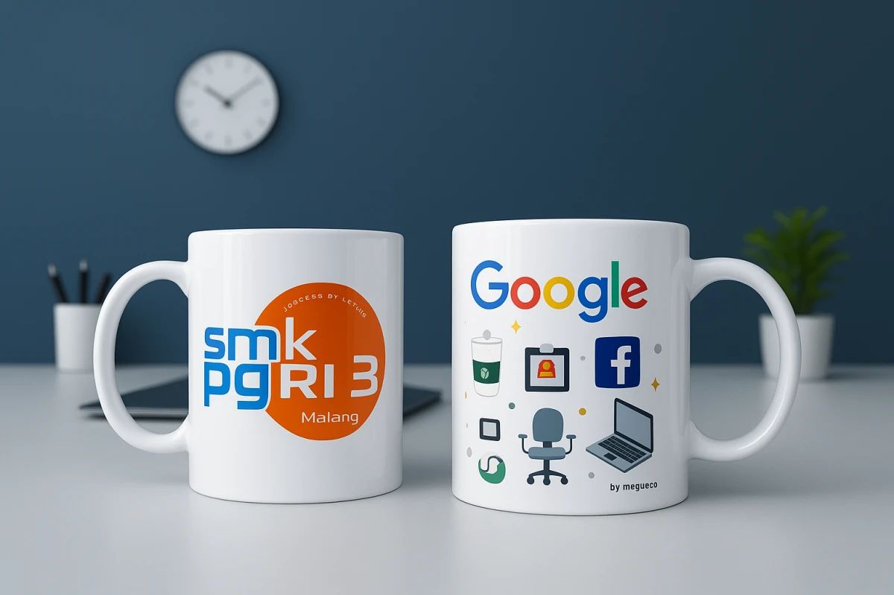

Ringkasan Eksekutif (Quick Answer)
Merchandise yang efektif harus relevan dengan penerimanya. Produk yang cocok untuk pengunjung expo belum tentu tepat untuk pelanggan loyal, komunitas, karyawan, atau prospek bisnis. Mulailah dari profil penerima, konteks penggunaan harian, dan tujuan kampanye, kemudian pilih produk yang realistis untuk dipakai serta proporsional dengan alokasi anggaran dan identitas brand Anda.
- Kegagalan terbesar pengadaan suvenir B2B adalah memilih barang murni karena selera pribadi panitia tanpa membedah profil penerima nyata.
- Tiap segmen audiens memiliki kebutuhan berbeda: pengunjung expo butuh kepraktisan instan, prospek B2B menghargai fungsionalitas meja kerja, sedangkan komunitas mencari identitas sosial.
- Karyawan internal bertindak sebagai duta merek; suvenir internal harus membangun rasa bangga dan kenyamanan kerja (employer branding).
- Menghindari 4 bias asumsi umum: tidak semua orang butuh tumbler, produk termahal belum tentu berkinerja terbaik, dan logo berukuran raksasa justru menurunkan retensi pemakaian.
- 1. Tiga Pertanyaan Kunci Sebelum Memilih Merchandise
- 2. Merchandise untuk Pengunjung Expo dan Pameran Dagang
- 3. Merchandise untuk Prospek Bisnis B2B dan Eksekutif
- 4. Merchandise untuk Pelanggan Loyal dan Mitra Strategis
- 5. Merchandise untuk Komunitas dan Penggemar Merek
- 6. Merchandise untuk Karyawan (Internal Onboarding & Culture)
- 7. Tabel Matriks Pemilihan Merchandise Berdasarkan Audiens
- 8. 4 Asumsi Keliru yang Sering Merusak Efektivitas Suvenir
- 9. Pertanyaan yang Sering Diajukan (FAQ)
1. Tiga Pertanyaan Kunci Sebelum Memilih Merchandise
Di meja rapat divisi pengadaan dan pemasaran, perdebatan seputar suvenir sering kali berputar di sekeliling pertanyaan subjektif: "Bagusan warna biru atau hitam?" atau "Lebih keren botol minum atau powerbank?". Pendekatan semacam ini menempatkan produk di depan sebelum memahami manusia yang akan menggunakannya.
Untuk memastikan anggaran promosi perusahaan tidak terbuang sia-sia menjadi tumpukan barang yang berakhir di gudang atau tempat sampah, mulailah dengan membedah 3 pertanyaan fundamental berikut:
- Siapa profil demografis dan gaya hidup penerima utama? Apakah mereka mahasiswa yang aktif berpindah ruangan kuliah, profesional korporat yang duduk 8 jam di depan komputer, teknisi lapangan, atau jajaran direksi pembuat keputusan anggaran? Tiap kelompok memiliki rutinitas yang sangat berbeda.
- Apa tindakan atau persepsi yang ingin Anda bangun? Apakah Anda sekadar menginginkan eksposur visual massal (brand awareness), pengumpulan kontak prospek valid (lead generation), penguatan retensi kontrak tahunan (client retention), atau pembentukan kebanggaan korporat (employer branding)?
- Dalam situasi dan ruang apa produk tersebut akan dipakai? Apakah produk akan dibawa bepergian di ruang publik (commuter), ditaruh permanen di meja kerja (office desk), digunakan di rumah pribadi (lifestyle), atau difungsikan saat acara luar ruangan (outdoor event)?
Insight Praktisi Pengadaan: Semakin spesifik skenario penggunaan yang Anda bayangkan, semakin mudah Anda menentukan spesifikasi teknis barang. Merchandise yang sukses bukanlah yang paling mewah di katalog, melainkan yang paling mulus menyatu dengan kebiasaan harian penerimanya.
2. Merchandise untuk Pengunjung Expo dan Pameran Dagang
Pengunjung pameran bisnis atau expo dagang berada dalam kondisi mobilitas tinggi. Mereka berkeliling lorong pameran selama berjam-jam, membawa tumpukan pamflet, dan berinteraksi dengan puluhan booth kompetitor. Merchandise untuk audiens ini harus memecahkan kendala kenyamanan fisik seketika.
Prioritas utama untuk audiens expo meliputi:
- Portabilitas dan Bobot Ringan: Hindari barang pecah belah, benda berukuran besar yang sulit dimasukkan saku, atau suvenir yang beratnya melebihi 300 gram.
- Daya Guna Instan di Lokasi Acara: Barang yang langsung dipakai di lantai pameran akan memicu rasa terima kasih spontan dan mendatangkan eksposur seketika ke pengunjung lain.
- Branding Kontras dan Ajakan Bertindak (CTA): Nama merek harus terlihat jelas dari jarak minimal 2 meter, disertai tautan cepat (dynamic QR code) menuju portofolio atau formulir penawaran digital perusahaan.
Pilihan Produk Aktual yang Ideal: Tas jinjing kanvas atau spunbond lipat berdimensi luas untuk menampung katalog, pulpen gel bodi metalik dengan ujung karet stylus untuk kemudahan mencatat di tablet, lanyard satin gantungan kartu tanda pengenal, serta pouch serbaguna tahan percikan air.

3. Merchandise untuk Prospek Bisnis B2B dan Eksekutif
Menghadapi prospek B2B tier menengah hingga atas membutuhkan pendekatan yang bertolak belakang dari pembagian suvenir massal. Para eksekutif, manajer pengadaan (procurement), dan pengambil keputusan korporat tidak akan terkesan dengan barang promosi murah yang terkesan murahan.
Bila tujuan Anda adalah membangun rasa hormat dan membuka pintu negosiasi bernilai puluhan hingga ratusan juta rupiah, merchandise yang diberikan harus memiliki nilai persepsi (perceived value) tinggi dan menonjolkan sentuhan profesionalisme elegan:
- Relevansi dengan Lingkungan Meja Kerja: Pilihlah barang-barang yang selalu diletakkan di ruang rapat atau meja kerja kantor. Paparan visual konstan terhadap nama merek Anda setiap kali prospek bekerja akan menanamkan top-of-mind awareness yang sangat kuat.
- Penerapan Desain Subtil (Subtle Branding): Hindari logo berukuran raksasa yang tampak norak. Eksekutif menyukai teknik laser engraving monokrom pada logam atau blind deboss tenggelam di atas sampul kulit agenda.
- Kemasan Eksklusif: Pengalaman membuka kotak (unboxing experience) memegang peranan 40% dari total persepsi nilai suvenir. Sertakan custom rigid hard box berpita elegan dan kartu ucapan berstempel resmi.
Pilihan Produk Aktual yang Ideal: Tumbler stainless vacuum SUS 304 tahan suhu 12 jam dengan tutup kedap, buku agenda hardcover kulit thermo PU dengan slot kartu nama, wireless powerbank bersertifikasi keselamatan, serta ballpoint premium berbobot mantap dalam tabung eksklusif.
4. Merchandise untuk Pelanggan Loyal dan Mitra Strategis
Pelanggan yang telah setia menggunakan jasa atau membeli produk Anda selama bertahun-tahun layak menerima apresiasi yang melampaui ucapan terima kasih standar. Hadiah apresiasi (client appreciation gift) berfungsi memperkokoh ikatan relasi, memperpanjang kontrak berlangganan, dan memicu rekomendasi organik (referral).
Karakteristik suvenir untuk pelanggan setia:
- Tahan Lama dan Bernilai Utilitas Tinggi: Berikan produk yang memiliki masa pakai 1 hingga 3 tahun agar investasi retensi Anda terus menghasilkan nilai paparan jangka panjang.
- Peluang Integrasi Insentif Loyalitas: Sertakan kartu ucapan yang memuat kode voucher diskon perpanjangan kontrak eksklusif atau akses layanan prioritas yang hanya diberikan kepada pemegang suvenir tersebut.
- Personalisasi Nama Penerima: Menambahkan ukiran nama individu klien di samping logo korporat Anda adalah trik psikologis paling ampuh untuk mencegah barang tersebut dipindahtangankan ke orang lain.

5. Merchandise untuk Komunitas dan Penggemar Merek
Bagi sebuah brand yang memiliki basis komunitas aktif (seperti komunitas teknologi, otomotif, lari, atau pengembang kreatif), merchandise bukan sekadar alat promosi, melainkan lambang keanggotaan dan kebanggaan bersama (badge of belonging).
Anggota komunitas tidak ingin terlihat memakai produk iklan. Mereka ingin mengenakan sesuatu yang merefleksikan nilai, estetika, dan kultur kelompok mereka:
- Desain Bernuansa Lifestyle dan Wearable: Gunakan grafis artistik, tipografi modern, atau kutipan jargon khas komunitas di mana logo perusahaan Anda ditempatkan secara harmonis di lengan, label tenun bawah, atau sudut tas.
- Bahan Berkualitas Retail: Jika Anda membuat t-shirt atau jaket, gunakan katun combed 24s/30s bersertifikasi OEKO-TEX atau fleece tebal yang nyaman dipakai nongkrong di kafe, bukan kain kaku yang gatal di kulit.
- Kolektibilitas Unik: Produk edisi terbatas (limited batch) dengan variasi warna atau nomor seri khusus sering kali menjadi incaran para anggota komunitas dan memicu antrean registrasi acara.
Pilihan Produk Aktual yang Ideal: Kaos polo lacoste katun, jaket hoodie zip, enamel pin kustom logam, gantungan kunci paracord tenun, tote bag kanvas tebal dengan saku dalam, serta paket stiker vinyl tahan air untuk laptop.
6. Merchandise untuk Karyawan (Internal Onboarding & Culture)
Karyawan adalah duta merek paling kredibel yang dimiliki perusahaan. Ketika seorang karyawan merasa bangga dengan tempat kerjanya, mereka akan dengan sukarela membagikan foto suvenir kantor di LinkedIn atau mengenakan jaket perusahaan saat berlibur di akhir pekan.
Merchandise internal umumnya dialokasikan untuk beberapa momen strategis:
- Paket Onboarding Karyawan Baru (Welcome Kit): Mengurangi kecemasan di hari pertama kerja dan mempercepat integrasi budaya korporat. Isinya mencakup ID card lanyard satin, buku panduan kerja bersampul kulit, pulpen tanda tangan, dan botol minum kantor.
- Apresiasi Akhir Tahun & Ulang Tahun Perusahaan: Membangun rasa memiliki (sense of belonging) dan menghargai kontribusi lembur tim sepanjang tahun.
- Seragam Event Internal & Family Gathering: Menciptakan kekompakan visual saat kegiatan outbound atau konferensi tahunan divisi.
Catatan Penting Pengadaan Internal: Pastikan kualitas barang yang diberikan kepada karyawan setara dengan suvenir yang diberikan kepada klien luar. Memberikan produk berkualitas rendah ke tim sendiri dapat memicu rasa diabaikan dan menurunkan motivasi kerja internal.
7. Tabel Matriks Pemilihan Merchandise Berdasarkan Audiens
Gunakan tabel matriks acuan pengadaan berikut sebagai panduan praktis dalam menyusun alokasi anggaran dan jenis barang untuk berbagai target segmen:
| Target Audiens | Objektif Utama | Kriteria Kunci Produk | Rekomendasi Produk Aktual |
|---|---|---|---|
| Pengunjung Expo / Pameran | Traffic booth & paparan visual massal | Ringan, praktis, branding kontras, memuat QR code | Tote bag spunbond 100 gsm, pulpen stylus metalik, lanyard satin, pouch serbaguna |
| Prospek Bisnis B2B (Decision Maker) | Lead conversion & membangun kepercayaan | Eksklusif, awet di meja kerja, laser engraving subtil | Tumbler vacuum stainless SUS 304, agenda leather thermo PU, corporate gift box set |
| Pelanggan Loyal & Mitra VIP | Retensi kontrak & referensi bisnis | Nilai persepsi tinggi, personalisasi nama, masa pakai > 1 tahun | Payung lipat otomatis anti-angin, powerbank wireless bersertifikat, tumbler double-wall grafir |
| Komunitas & Penggemar Brand | Advokasi merek & identitas sosial | Wearable, desain artistik lifestyle, material retail-grade | Kaos katun combed 24s sablon discharge, jaket hoodie fleece, enamel pin, tote bag kanvas tebal |
| Karyawan Internal Kantor | Employer branding & produktivitas kerja | Fungsional kantor, nyaman dipakai harian, rapi dan seragam | Welcome kit onboarding, tumbler meja kantor, polo shirt bordir presisi, backpack laptop busa tebal |

8. 4 Asumsi Keliru yang Sering Merusak Efektivitas Suvenir
Banyak anggaran promosi ratusan juta rupiah berakhir tanpa dampak konversi yang terukur semata-mata karena tim perencana terjebak dalam bias asumsi yang tidak pernah diuji ke lapangan:
- Asumsi "Semua Orang Pasti Suka Tumbler": Meskipun botol minum adalah suvenir populer, memberikan tumbler berukuran jumbo kepada pengunjung expo yang berjalan kaki tanpa tas akan menjadi beban yang menjengkelkan. Sesuaikan kapasitas dan portabilitas barang dengan situasi acara.
- Asumsi "Produk Paling Mahal Selalu Paling Efektif": Memberikan gadget berteknologi rumit yang cepat rusak akibat baterai abal-abal justru mencoreng reputasi kredibilitas perusahaan. Produk sederhana berkualitas tinggi (seperti pulpen gel dengan penulisan mulus) jauh lebih diapresiasi dibanding powerbank murah berkapasitas palsu.
- Asumsi "Makin Besar Ukuran Logo, Makin Tinggi Brand Awareness": Logo raksasa yang mendominasi seluruh permukaan barang justru membuat penerima enggan menggunakannya di depan umum karena merasa menjadi papan reklame gratis. Tempatkan logo secara proporsional dan elegan agar produk bangga dipakai berulang kali.
- Asumsi "Satu Jenis Merchandise Cukup untuk Seluruh Tamu": Menerapkan konsep one-size-fits-all pada acara berskala besar sering kali menghasilkan pemborosan. Pisahkan suvenir menjadi sistem 2-tier: suvenir massal untuk pengunjung umum di meja depan, dan suvenir VIP untuk tamu khusus di ruang pertemuan.
Bingung Menentukan Merchandise yang Tepat untuk Audiens Kampanye Anda?
Konsultasikan profil target audiens, jadwal acara, dan alokasi budget Anda bersama tim spesialis B2B Seminarkits.id. Dapatkan rekomendasi kurasi produk terbaik beserta sampel fisik gratis untuk pengadaan instansi!
Minta Rekomendasi & Quotation9. Pertanyaan yang Sering Diajukan (FAQ)
Siap Memproduksi Merchandise Kustom Sesuai Persona Target Anda?
Dapatkan konsultasi gratis, digital mock-up 1x24 jam, jaminan ketepatan waktu deadline acara, dan pengiriman aman ke seluruh kota di Indonesia bersama Seminarkits.id.
Panduan Terkait Lainnya di Cluster Merchandise